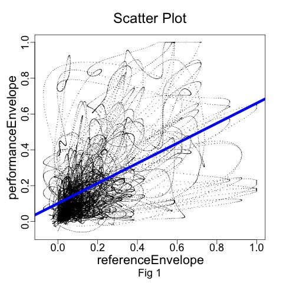
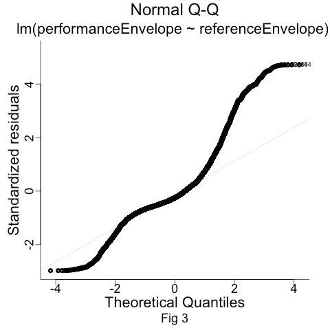
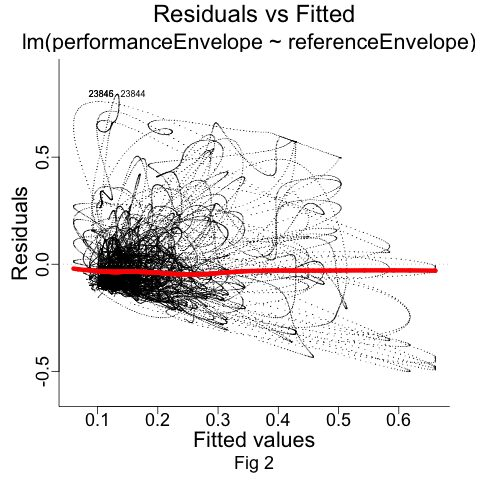
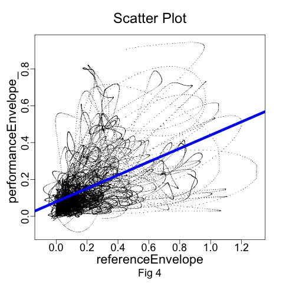
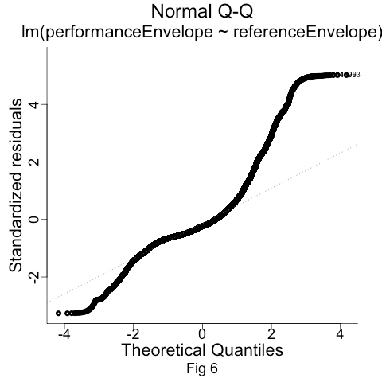
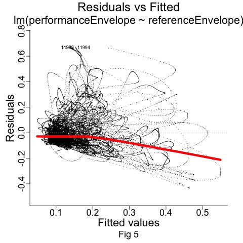
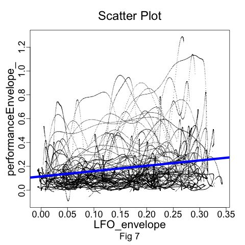
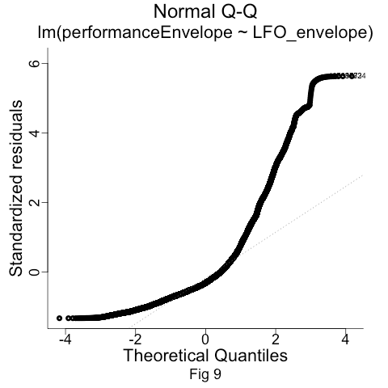
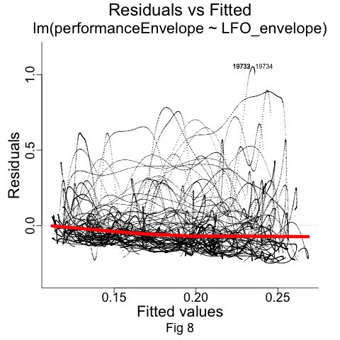

Quantitative evaluation of aspects of embodiment in new digital musical instruments
abstract
This paper discusses a quantitative method to evaluate whether an expert player is able to execute skilled actions on an unfamiliar interface while keeping the focus of their performance on the musical outcome rather than on the technology itself. In our study, twelve professional electric guitar players used an augmented plectrum to replicate prerecorded timbre variations in a set of musical excerpts. The task was undertaken in two experimental conditions: a reference condition, and a subtle gradual change in the sensitivity of the augmented plectrum which is designed to affect the guitarist’s performance without making them consciously aware of its effect. We propose that players’ subconscious response to the disruption of changing the sensitivity, as well as their overall ability to replicate the stimuli, may indicate the strength of the relationship they developed with the new interface. The case study presented in this paper highlights the strengths and limitations of this method.
CCS Concepts
• Human-centered computing → Human-computer interaction (HCI) → HCI design and evaluation methods; User Studies
•Applied computing→ Arts and humanities; Sound and music computing
•Applied computing→ Arts and humanities; Performing arts
Introduction
New digital musical instruments face many barriers to adoption, both technical and human. Skill acquisition poses a particularly vexing problem: skills that performers acquire over extended time on traditional instruments do not necessarily transfer to new instruments, with the result that expert-level performances on new instruments remain relatively rare [1][2][3].
It is appealing to seek technical solutions to problems of human sensorimotor learning by seeking to leverage existing skills in new designs [4]. Examples of skill transference can be found in commercial instrument design, including the electric guitar and the inclusion of the familiar piano-style keyboard on Moog synthesisers. However, it is far from obvious how to build on existing skills in the general case.
Before we can answer such a question, we should first ask how we can even evaluate whether a new instrument is making use of a performer’s existing skill. How do we know how far existing sensorimotor skills can transfer? When a performer is confronted with a modified or unfamiliar instrument, how do we know to what extent their performance makes use of existing training? This paper presents a quantitative method for analysing the encounter between a performer and a partially familiar instrument. We ask to what extent performers adapt their playing to achieve specific sonic outcomes on the new instrument, versus simply continuing with existing motor programs from their familiar technique, largely ignoring the difference in sound produced by the new instrument.
We present a case study with electric guitarists encountering an unfamiliar augmented plectrum technology [5], evaluating to what extent they can adapt their playing to match specific target sounds, sometimes even without being aware of the adjustments they made to do so. We situate our work in theories of embodiment and sensorimotor learning. The results of this work are applicable not only to augmented instruments, but more generally to any new instrument that seeks to connect to existing skills.
Background
It is a common experience amongst skilled musicians that the instrument behaves as an extension of the body: the operations of manipulating the instrument recede from consciousness allowing the performer to focus attention on the higher-level task of music-making [6][7]. This embodiment relationship [8][9] between performer and instrument has a number of consequences: for example, a skilled performer is often able to imagine the desired sound and will be able to call up the correct motor programme to achieve that sound on their instrument without a significant investment of conscious attention [10]. As the actions of manipulating the instrument become automatic, performers also gain the ability to adjust their actions rapidly and precisely to correct errors or to expressively shape their performance.
Embodiment is one of several possible performer-instrument relationships elicited by digital musical instruments [9][11], and the term itself has a wide range of possible connotations. In this paper, we are more interested in observable patterns of performance than the experiential qualities of embodiment relationships. Thus, we will focus here on sensorimotor skill, which is one contributing factor to the emergence of embodiment relationships.
Existing Sensorimotor Skills, New Instruments
J. O’Connor suggests there are four stages of perceptual-motor learning of a musical instrument [12]:
unconscious incompetence
conscious incompetence
conscious competence
unconscious competence
A player will spend years advancing through these stages, first becoming aware of things they cannot do, then learning to do them through considerable effort and attention, and finally internalising the skills to the extent that minimal conscious attention is required [13][14], freeing that attention for higher-level musical interpretation. Changes to the physical or sonic characteristics of the instrument can heavily impact the ability of performers to use their existing motor skills [15] and lead to a state of impaired fluency, where it is not possible to play something in tempo, with proper rhythm and intonation. In these cases, the instrumental modifications mean that conscious attention is once again required for each operation, with a corresponding reduction in speed and precision [16].
Since developing new expertise on an instrument can take years, digital musical instrument designers have turned to strategies to repurpose existing skills on new instruments (e.g. [17][18][19]), often through the augmentation of familiar instruments. In addition to building on existing sensorimotor skills, augmented instruments might connect to existing cultural references, though a new instrument need not be a literal augmentation of an existing instrument to achieve these goals.
Evaluating Skill Transfer
Given a new instrument, it is challenging to evaluate to what extent a player is able to draw on their existing motor programs without investing significant conscious attention to performing the instrument’s new techniques. Subjective methods like self-reports, questionnaires and experience sampling methods [20] can report incomplete or biased data, while physiological measurements [21] can be intrusive and difficult to interpret.
Compounding the challenge, performer-instrument relationships rarely display only one mode. Performers of augmented traditional instruments might be able to retain expertise (unconscious competence) with the underlying traditional instrument, while the augmented behaviour remains unfamiliar. Morreale et al. [5] observed two patterns of behaviour when traditional instruments and augmentation are closely intertwined. In the first case, the performer lets the augmentation partially or totally disrupt their playing of the traditional instrument, since the new techniques are not yet familiar. In the second case, the performer ignores the sonic result of the augmentation and focuses on regulating their performance according to what they would normally do on the traditional instrument.
In the second scenario, the augmentation produces a sonic output unguided by any meaningful intentionality on the part of the performer; the instrument reacts but whether the performer is interacting with the instrument is debatable since they are largely ignoring the actual sonic output of the augmentation. (Indeed, the ability of trained performers to carry on in the presence of unfamiliar auditory feedback has been empirically demonstrated [22][23][24].) Thus, to evaluate the relationship between performer and augmented instrument, the central questions in this study will be: to what extent do players listen to the sound of the augmentation and adapt their motor skills to achieve specific sonic results? Does that adaptation happen on a conscious basis (involving deliberate attention) or an unconscious basis (retaining a state of unconscious competence)?
To quantitatively address the former question, we designed a case study involving professional guitar players, an augmented plectrum, and an experimental disruption. During the study, professional guitar players were asked to replicate a series of stimuli using the augmented plectrum. In this paper, we propose an evaluation method based on subtly altering the action-sound mapping of the augmentation and measuring players’ responses, where a series of simple linear correlations can offer a high-level view of whether the performer is listening to and responding to the actual sound of the instrument. Interviews following the study give some initial insights into the second question.
Performer Study
This study was designed to evaluate professional guitarists' ability to use an augmented plectrum to replicate timbre modifications in a series of short musical excerpts (blues licks) for electric guitar. Eleven professional electric guitar players, working either as tutors in universities or as session musicians, were invited through an open call sent to music schools. Zatorre et al. [25] demonstrated that trained musicians perform better on sensorimotor imagery tasks. Consequently, we selected musicians with an ABRSM Grade 7 qualification1 or higher.
Guitar players who participated in the study were familiar with using traditional plectrums with electric guitars, had played musical repertoire which included blues music, and were unfamiliar with the augmented plectrum: the Magpick [5], a guitar pick integrating a sensor detecting a combination of quantity of movement in the picking gestures and proximity to the electric guitar pickup. Playing louder or closer to the pickups produces a stronger signal. The resulting signal can be applied to control an audio effect that in turn modifies the guitar timbre. In this study, the Magpick controls a wah-wah effect (resonant bandpass filter) whose cutoff frequency follows the amplitude envelope of the Magpick signal2.
The reason for choosing blues licks and designing a pick augmentation that sounds close to a wah-wah effect is to maintain a correspondence between the players’ repertoire (blues music aesthetics) and the experimental task. We aimed to engage participants in an extension of their performance practice using the Magpick rather than engaging them in a completely unfamiliar activity that could have entirely disrupted their embodiment with the pick.
The study took place in a rehearsal room situated on a university campus. Sessions were conducted with one participant at a time, facilitated by the first author. Before the beginning of the study, participants were briefed about how the Magpick works and could try it by playing some musical excerpts. The experiment itself was divided into three parts, the first two of which are discussed in this paper.
The first part of the study is designed to address the research question: how well did participants replicate timbral modifications of an electric guitar sound using a modified plectrum for which they do not have an established sensory-motor program?
In the second part of the study, a very slow triangular low-frequency oscillator (LFO) decreases the Magpick sensitivity by 33% and takes it back to its normal state over a one minute period. The LFO disrupts the Magpick sensitivity so that, if participants do not adjust their playing to compensate, the performed guitar sound becomes darker. When the value of the LFO increases, the sensitivity of the Magpick decreases and guitar players need to pluck the strings with more strength to open the cutoff filter and achieve a bright sound.
The research questions for this second section are: to what extent are participants listening to the timbre variations produced by the Magpick? And provided that they perceive the sonic result of the sensitivity change in the Magpick behaviour, do they adapt their playing? If participants act to compensate for the LFO effect, we might conclude that they are listening and responding to the sonic modification produced by the Magpick. We did not brief participants about the LFO effect. If they were adjusting their playing without being aware of its disruption (thus subconsciously), we may infer that they were able to use the Magpick without losing the focus on the external musical environment which in turn may signify they were able to:
use their existing motor skills to play the instrument
reach a state of unconscious attention.
Stimuli
A total of 48 licks were recorded using the Magpick. Each lick was two bars long in 4/4 metre. Sixteen stimuli were recorded gradually increasing or decreasing the brightness of the guitar sound (i.e. increasing or decreasing the quantity of movement applied to plucking gestures over time, thereby changing the amount of sweep of the filter frequency). Sixteen stimuli were recorded, keeping the timbre constantly brighter or duller (i.e. plucking the strings with the Magpick with a constant quantity of movement). Sixteen stimuli3 were recorded making the guitar sound brighter or softer for specific notes of the excerpts (i.e. applying a more excellent or a minor quantity of movement in plucking some of the notes of the passages).
Procedure
Guitarists were asked to replicate the licks with particular attention to the timbre. Players used the Magpick, either with their own guitar or the guitar used to record the stimuli. Participants reproduced sixteen guitar licks in the first section of the study and sixteen guitar licks in the second section. The order of the sections as well as the order of the stimuli was randomised for each participant. Stimuli were selected randomly from a list of recorded licks. Licks were shown one at a time on a monitor as tablature and played back using speakers. Players were allowed three attempts to reproduce each lick. Only the last attempt for each lick is used for analysis as it possibly represents the moment of maximum familiarity with the stimulus and therefore the best performance.
Collecting and preparing the data for analysis
The Magpick reference envelope (generated while recording each stimulus), the corresponding performance envelope (generated during participants’ performance), and the LFO generated in part 2 to modulate the Magpick sensitivity were recorded on the Magpick device as 44.1 kHz, 16-bit signals.
The audio files were then imported into the Audacity [26] audio editor on a laptop. The envelope signals were filtered to retain the large-scale shapes of the envelopes while de-emphasising short transient events which might occur at slightly different times between stimulus and performance. Both signals were then filtered with a 4th-order (24dB) low-pass filter set to a 1Hz cutoff. To compensate for the group delay introduced by the filter, we reversed and filtered the signals again using the same settings, for a 48dB total slope.
All the filtered performance envelopes of the eleven participants were concatenated in a single audio file. Likewise, all the filtered reference envelopes of the eleven participants were concatenated in an audio file. The start of each reference envelope, the onset of every performance envelope and, for part 2, the corresponding LFO segment were aligned manually using an audio editor to allow for correlations and comparisons. The end of the signals was truncated so that correlation tests did not involve portions of the files that displayed silence. The signals were exported as CSV files (listing one amplitude value for each sample) and then merged into a single database and imported into R Studio [27] to evaluate their relationship. All the statistical analyses presented in this paper were conducted in R.
Apparatus
The Magpick signal (whose value ranges from 0 to 1) is fed into a Bela [28] and processed through an envelope follower filter effect written in C++. The code takes the envelope of the Magpick signal to control a resonant filter. The electric guitar audio signal is also fed into the same Bela unit to be processed through the filter. The audio output is connected to a guitar amplifier. The timbral result is closer to what a blues-guitar player would recognise as a wah-wah effect or an envelope follower. An absence of interaction with the Magpick (i.e. zero Magpick signal) results in the filter cutoff being set at 164 Hz (which corresponds to the musical note E3). By contrast, the maximum interaction with the Magpick (i.e. the hardest possible playing) results in the filter cutoff being set at 5274 Hz (which corresponds to the musical note E8). The filter Q is set to 8, a distinct resonance that emphasises the sweep of the filter controlled by the Magpick. The attack time interval for the envelope follower engine is set to 1 ms, so that a sudden picking gesture immediately opens the filter, and has a release time of 300 ms to allow for the filter sweep sonic effect to be perceived over time.
In part 2, the code also starts an LFO that affects the sensitivity of the Magpick. The performance envelope is calculated as the Magpick envelope multiplied by 1 minus the LFO value.
Statistical tests
The strength of the relation between the envelope played by the performer and the reference envelope, reference envelope and LFO envelope is assessed through Pearson’s correlation tests in the two parts of the study.
Correlation Tests | ||
Part 1 Performance Envelope | and | Part 1 Reference Envelope |
Part 2 Performance Envelope | and | Part 2 Reference Envelope |
Part 2 Performance Envelope | and | Part 2 LFO Envelope |
The Pearson’s test determines the significance and the direction of the relation with an index that comprises between 1 and -1. 1 means that the variables evolve in the same direction, 0 means that they are independent (hence, they have no relation), and -1 means that the variables evolve in opposite directions.
The Pearson’s test is meant to evaluate a linear relationship between the variables. Thus, a linear regression model was computed for each pair of variables before running the related correlation tests. A linear regression model has the goal of describing the linear relation between two variables that are one independent (like the reference envelope, or the reference envelope or the LFO envelope) and one dependent (like the performance envelope). The model evaluates the direction of the relationship indicated by the slope value (positive, negative) and its significance. The model is described graphically by a scatter plot and its regression line. The slope of the regression line is the expression of the slope value of its regression model. The regression line shows whether the relation between the variables is linear or not (a straight line rather than a curved line). A further indicator of linearity that is computed as part of a linear regression model is R2 (with a value between 0 and 1). It tells us how well the regression model predicts the relationship between the independent and the dependent variables. A high R2 value suggests a linear relation. However, some fields of study have an inherently greater amount of unexplainable variation. In these areas, the R2 value is bound to be lower [29]. For example, studies that try to explain human behaviour generally have R2 values of less than 50%. An additional statistic to check the linearity of the relationship between dependent and independent variables in the study is the residuals vs fitted graph. The graph describes the relationship between the residuals values (how distant each value of the model is distant from the actual value observed) and the estimated responses of the model (fitted values). A straight line in the graph is an indicator of a linear relation. The Breusch-Pagan test evaluates whether heteroscedasticity (a condition that suggests a non-linear relation between the variables) is present. The test returns a p-value that suggests a linear relationship when less than 0.5. Finally, the normality of residuals is plotted for each pair of variables. The test represents once again a way to query whether a linear relationship exists between the performance envelope and the stimuli or reference or LFO envelopes. Residual points (values) following the straight dashed line suggest linearity and that the model’s predictions are correct on average rather than systematically too high or low. For large sample sizes, the central limit theorem suggests that confidence intervals and tests on the coefficients are approximately valid whether the error follows a normal distribution or not [30] [31].
Part 1: performance and reference envelope
The scatter plot in Image 1 shows the regression line between the performance and the reference envelopes while Image 2 shows the normality of residuals. Breusch-Pagan test shows the data are characterised by homoscedasticity with p < 2.2e-16 while Image 3 shows the residuals vs Fitted plot line. Computing Cook’s distance lines did not show any influential outlier. The linear regression model presents a slope value of 0.56 (i.e. a change of 1 unit in the reference envelope yields a change of 0.56 in the performance envelope) with p < 2e-16. The residual standard error is 0.17 while the R2 value is 0.26 with p < 2e-16. The Pearson’s product-moment correlation test returns a correlation coefficient of 0.51 with a 95% confidence interval between 0.5 and 0.52 with p < 2.2e-16.
 Image 1 |  Image 2 |  Image 3 |
Part 1 - Performance and Reference Envelope | ||


Part 2: sensitivity disruption
The scatter plot in Image 4 shows the regression line between the performance envelope and the reference envelope while Image 5 presents the normality of residuals. Breusch-Pagan test shows the data are characterised by homoscedasticity with p < 2.2e-16 while Image 6 shows the residuals vs fitted plotline. Computing Cook’s distance lines did not show any influential outlier. The linear regression model presents a slope value of 0.45 with p < 2e-16. The residual standard error is 0.15 while the R2 value is 0.25 with p < 2e-16. The Pearson’s product-moment correlation test returns a correlation coefficient of 0.52 with a 95% confidence interval between 0.51 and 0.53 with p < 2.2e-16.
 Image 4 |  Image 5 |  Image 6 |
Part 2 - Performance and Reference Envelope | ||


The scatter plot in Image 7 shows the regression line between the performance envelope and the LFO signal while Image 8 presents the normality of residuals. Breusch-Pagan test shows the data are characterised by homoscedasticity with p < 2.2e-16 while Image 9 shows the residuals vs Fitted plot line. Computing Cook’s distance lines did not show any influential outlier. The linear regression model presents a slope value of 0.44 with p < 2e-16. The residual standard error is 0.19 while the R2 value is 0.1 with p < 2e-16. The Pearson’s product-moment correlation test returns a correlation coefficient of 0.21 with a 95% confidence interval between 0.2 and 0.22 with p < 2.2e-16.
 Image 7 |  Image 8 |  Image 9 |
Part 2 - Performance and LFO Envelope | ||


Discussion
Data gathered in this study quantify a certain kind of skilled action (control the quantity of motion in the picking gesture) that took place apparently without being directed by conscious attention. This skilled action was correlated with the quantity of motion produced by recording the stimuli. The feeling of participants was not measured: we measured their action, the quantity of movement in their picking gesture, to get a more quantitative picture of whether a performer is managing to retain their ability to perform with a modified plectrum.
On a scale ranging from -1 (inverse correlation) to +1 (positive correlation), participants were able to match the timbre stimuli with a correlation coefficient of 0.5 in both the first and the second part of the study. For every change of one unit in the reference signal, the performance envelope changed in the same direction by 0.56 in Part 1 and 0.45 in Part 2. The resulting correlations show a reasonable degree of correspondence between stimulus and performance which is not present in correlation analyses between deliberately unrelated signals (see Limitations below), thus giving confidence that performers are executing the task of replicating the stimuli to at least a modest degree of accuracy. In other words, the positive correlation values, as well as the positive slope values, suggest that participants were able to play the Magpick in such a way to open and close the cutoff frequency of the filter applied to the guitar sound as it was recorded while generating the stimuli.
In Part 2, data shows that participants adapted their playing to the LFO effect with a positive correlation of 0.2 and a positive slope value of 0.44. In other words, when the LFO value was increasing, making the Magpick signal less sensitive, participants were also increasing the magnitude of their interaction with the Magpick (i.e. picking the strings with more strength and/or closer to the pickups). As discussed, the effect of the LFO on the Magpick sensitivity is audible as a changing filter cutoff. Since there is no other way for a performer to discover the effect of the LFO, the correlation analysis suggests that participants must be listening to the guitar sound modified by the Magpick, noticing its change either consciously or subconsciously. In turn, they adapted their playing to partially (though not fully) compensate for the effect of the LFO disruption.
Participants were not briefed about the LFO disruption before or during the study. At the end of the experiment, they were asked if they had noticed any change in the magpick behaviour during the experiment. None of them reported having experienced a change in the Magpick sensitivity. We thus speculate that participants not only were listening to the sonic augmentation and reacted to the LFO, but also that their reaction was unconscious as they did not report its effect. Adapting their playing by adjusting their picking gestures became an automatic subconscious action possibly similar to the action of placing their finger on the fretboard or plucking the strings. The focus of their interaction stayed on the musical task (replicating the guitar lick’s timbre) rather than shifting toward the technology (the change in the Magpick sensitivity produced by the LFO).
A learning process is generally required to build skills like this. Professional players spend a lot of time building skills on one interface. A designer then either changes some aspect of the interface may try to build on the same skills. The method presented in this paper tells how well the design does with that change of the interface (the augmentation of a plectrum). Can people adapt their existing skills, acquired using a normal pick, without a further training period, or are they set back in their ability to play? The fact that participants never saw the Magpick is a motivation for the study. Can somebody achieve the desired outcome without resorting to a high cost of conscious attention? It’s true that not any subconscious action performed during execution is a result of maintaining their ability to focus on the sonic outcome of performance rather than on the functioning of the instrument or their gestures. For example, there are ancillary gestures that are not such an indicator. However, in the study, we are addressing a certain type of gesture that has directly to do with the performance. Specifically, the picking gesture.
The correlation values discussed in this paper could certainly have been higher. Eight participants out of eleven stated at the beginning of the study (when no disruption was present) that they had to pick the guitar strings stronger than they were used to replicate certain stimuli. Being required to sometimes pick the strings stronger than usual may have affected their ability to match the stimuli and, in the second section, adjust for the LFO.
Limitations
The meaningfulness of the correlation analyses was checked against baseline correlations and linear regression models performed on unrelated variables. As an example, we computed a linear regression model with the reference envelope from part 1 and the LFO signal from part 2. The test returned a slope < 0.00 with R2 7.494e-06 and p = 0.617. A further linear regression test conducted between the reference envelope from part 1 and the performance envelope from part 2 returned similar non-significant results. However, it also returned a significant p-value. We may conclude that the p values are not always reliable in the linear regression tests applied to this dataset and that the s slope and the R2 values describe the relationship of the variables more accurately. The R squared results show low values which may suggest low predictability for the model. In other words, the slope values may not be perfectly representative of the numeric relationship between stimuli and responses. The study is based on human-based tasks possibly leading to uncertainty in the data.
The human-based nature of the study may also have led to a partially linear relationship between the variables that in turn affects the predictability of the calculated regression models. However, the models computed in this research are not meant to perfectly predict the performance values based on the stimuli values. Rather, they are useful for getting insights into the data (i.e. whether participants are increasing their picking strength to achieve brighter sounds when the stimuli sound is brighter). Future research may adopt different statistical tests to measure the correlation between the envelope signals. Especially tests meant to assess partially linear relationships between variables. To determine whether participants were consciously or unconsciously reacting to the LFO, we relied on participant self-reports. Being able to determine whether the players’ response to the disruption is conscious or unconscious is a key point in determining the stage of instrument motor learning experienced by players. For this reason, additional research strategies are needed to reinforce the hypothesis that performers not only responded to the disruption and adapted their playing but that they also did it unconsciously as a result of responding to the auditory feedback of the augmentation.
The subjective feeling of participants was not measured; we measured their action, and the quantity of movement in their picking gesture. Evaluating to what extent players are experiencing a subconscious response to the LFO may be the subject of future work. In this study, we instead tried to bring an external view to whether somebody is able to execute skilled actions on an unfamiliar interface. The goal is not to privilege an objective method against subjective methodologies, but rather to complement existing methods with something that is outwardly observable and repeatable.
Having different electric guitars in the study (participants were allowed to use their personal guitars) has possibly introduced a source of variability and unfamiliarity in the behaviour of the system. It may have been good if players had a longer opportunity to play on that guitar before introducing the Magpick. However, performers are usually pretty adapted to switching guitars, so it shouldn’t have affected their ability too much.
Conclusions
In this paper, we proposed an evaluation method to examine the repurposing of motor skills for new digital or augmented instruments by expert players. The evaluation method is quantitative, based on simple correlations based on replication of target stimuli and slow changes to action-sound mappings. This method will be most useful for instruments that are intended to repurpose existing sensorimotor skills as well as being characterised by predictable and repeatable forms of interaction. Evaluating new musical interfaces in such a context can be challenging as it requires observing activities that happen on a subconscious level and cannot be easily queried. The results from our case study appear to show at least a modest subconscious response to changes in augmentation behaviour, and the principles introduced in the paper could be adapted to other scenarios in new instrument research.
Acknowledgements
This research is supported by EPSRC under the grants EP/L01632X/1 (Centre for Doctoral Training in Media and Arts Technology) and by the Royal Academy of Engineering under the Research Chairs and Senior Research Fellowships scheme.
Ethics Statement
Guitar players received an information sheet explaining the nature and demands of the research before the beginning of the study. They also signed a consent form to take part in the study. Risk assessment for COVID 19 took place before the experiment. A copy of the risk assessment report was provided to the participant. The study followed the university policy on COVID 19 as well as public health guidelines to help protect the people taking part in the experiment. A copy of the current university procedures in light of the COVID 19 pandemic was provided alongside the study information sheet.
Footnotes
ABRSM (Associated Board of the Royal Schools of Music) is an accredited board awarding exams and diploma qualifications in music within the UK.
↩Please visit the following link for a description of how the Magpick agency: https://www.youtube.com/embed/dz9isJfjf4U?feature=oembed
↩Please visit the following link for an example of a stimulus used during the study https://www.youtube.com/embed/nIadS_MLTko?feature=oembed
↩
Citations
- ↩Morreale, F., & McPherson, A. (2017). Design for longevity: Ongoing use of instruments from NIME 2010-14. International Conference on New Interfaces for Musical Expression.
- ↩Morreale, F., McPherson, A., Wanderley, M., & others. (2018). NIME Identity from the Performer’s Perspective. International Conference on New Interfaces for Musical Expression.
- ↩Levitin, D. J., McAdams, S., & Adams, R. L. (2002). Control parameters for musical instruments: a foundation for new mappings of gesture to sound. Organised Sound, 7(2), 171–189.
- ↩Cook, P. (2001). Principles for designing computer music controllers. International Conference on New Interfaces for Musical Expression.
- ↩Morreale, F., Guidi, A., & McPherson, A. (2019). Magpick: an augmented guitar pick for nuanced control. New Interfaces for Musical Expression.
- ↩Leman, M., Lesaffre, M., Nijs, L., & Deweppe, A. (2010). User-oriented studies in embodied music cognition research. Musicae Scientiae, 14(2), 203–223.
- ↩Nijs, L. (2017). The merging of musician and musical instrument: Incorporation, presence, and levels of embodiment. In The Routledge companion to embodied music interaction (pp. 49–57). Routledge.
- ↩Ihde, Don. (1990). Technology and the lifeworld : from garden to earth / by Don Ihde (pp. xiv, 226 p.:) [ Book ]. Indiana University Press Bloomington .
- ↩Magnusson, T. (2009). Of epistemic tools: Musical instruments as cognitive extensions. Organised Sound, 14(2), 168–176.
- ↩Zatorre, R. J., Chen, J. L., & Penhune, V. B. (2007). When the brain plays music: auditory–motor interactions in music perception and production. Nature Reviews Neuroscience, 8(7), 547–558.
- ↩Magnusson, T. (2009). Of epistemic tools: Musical instruments as cognitive extensions. Organised Sound, 14(2), 168–176.
- ↩Tahıroğlu, K., Magnusson, T., Parkinson, A., Garrelfs, I., & Tanaka, A. (2020). Digital Musical Instruments as Probes: How computation changes the mode-of-being of musical instruments. Organised Sound, 25(1), 64–74.
- ↩Norton, D. (1989). Not Pulling Strings by Joseph O’Conner. New Maiden, Surrey: Lambent Books, 1987.\pounds 6.95, 168 pp. British Journal of Music Education, 6(1), 107–108.
- ↩Leman, M., Lesaffre, M., Nijs, L., & Deweppe, A. (2010). User-oriented studies in embodied music cognition research. Musicae Scientiae, 14(2_suppl), 203–223.
- ↩Schmidt, R. A., Lee, T. D., Winstein, C., Wulf, G., & Zelaznik, H. N. (2018). Motor control and learning: A behavioral emphasis. Human kinetics.
- ↩Morreale, F., Armitage, J., & McPherson, A. (2018). Effect of instrument structure alterations on violin performance. Frontiers in Psychology, 9, 2436.
- ↩Guidi, A., Morreale, F., McPherson, A., & others. (2020). Design for auditory imagery: altering instruments to explore performer fluency.
- ↩Overholt, D. (2005). The overtone violin. Proceedings of the 2005 Conference on New Interfaces for Musical Expression, 34–37.
- ↩McPherson, A. (2017). 2012: TouchKeys: Capacitive Multi-touch Sensing on a Physical Keyboard. In A NIME Reader (pp. 419–432). Springer International Publishing. https://doi.org/10.1007/978-3-319-47214-0_27
- ↩Thibodeau, J., & Wanderley, M. M. (2013). Trumpet augmentation and technological symbiosis. Computer Music Journal, 37(3), 12–25.
- ↩Csikszentmihalyi, M., & Hunter, J. (2014). Happiness in everyday life: The uses of experience sampling. In Flow and the foundations of positive psychology (pp. 89–101). Springer.
- ↩Wright, S. E., & Palmer, C. (2020). Physiological and Behavioural Factors in Musicians’ Performance Tempo. Frontiers in Human Neuroscience, 14, 311.
- ↩Morreale, F., Guidi, A., & McPherson, A. (2019). Magpick: an augmented guitar pick for nuanced control. New Interfaces for Musical Expression.
- ↩Pfordresher, P. Q. (2012). Musical training and the role of auditory feedback during performance. Annals of the New York Academy of Sciences, 1252(1), 171–178.
- ↩Pfordresher, P. Q., & Palmer, C. (2006). Effects of hearing the past, present, or future during music performance. Perception & Psychophysics, 68(3), 362–376.
- ↩Hafke-Dys, H., Preis, A., & Trojan, D. (2016). Violinists’ perceptions of and motor reactions to fundamental frequency shifts introduced in auditory feedback. Acta Acustica United with Acustica, 102(1), 155–158.
- ↩Zatorre, R. J., Halpern, A. R., & Bouffard, M. (2010). Mental reversal of imagined melodies: a role for the posterior parietal cortex. Journal of Cognitive Neuroscience, 22(4), 775–789.
- ↩Morreale, F., Guidi, A., & McPherson, A. (2019). Magpick: an augmented guitar pick for nuanced control. New Interfaces for Musical Expression.
- ↩Martin, M. (2014). Audacity 2. Mediaforma. https://books.google.it/books?id=jhoaCwAAQBAJ
- ↩Racine, J. S. (2012). RStudio: a platform-independent IDE for R and Sweave. JSTOR.
- ↩McPherson, A., & Zappi, V. (2015). An environment for submillisecond-latency audio and sensor processing on BeagleBone Black. Audio Engineering Society Convention 138.
- ↩Funder, D. C., & Ozer, D. J. (2019). Evaluating effect size in psychological research: Sense and nonsense. Advances in Methods and Practices in Psychological Science, 2(2), 156–168.
- ↩Ernst, A. F., & Albers, C. J. (2017). Regression assumptions in clinical psychology research practice—a systematic review of common misconceptions. PeerJ, 5, e3323.
- ↩Lumley, T., Diehr, P., Emerson, S., & Chen, L. (2002). The importance of the normality assumption in large public health data sets. Annual Review of Public Health, 23(1), 151–169.